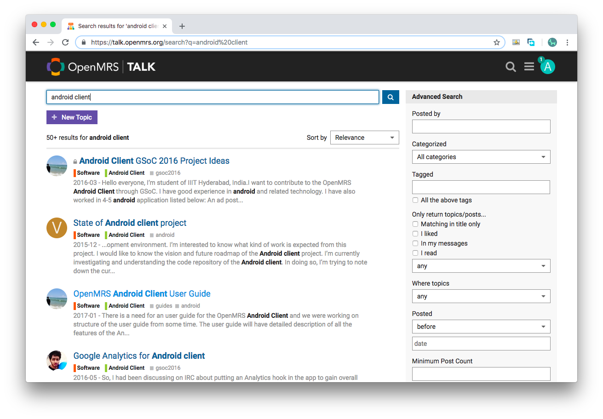
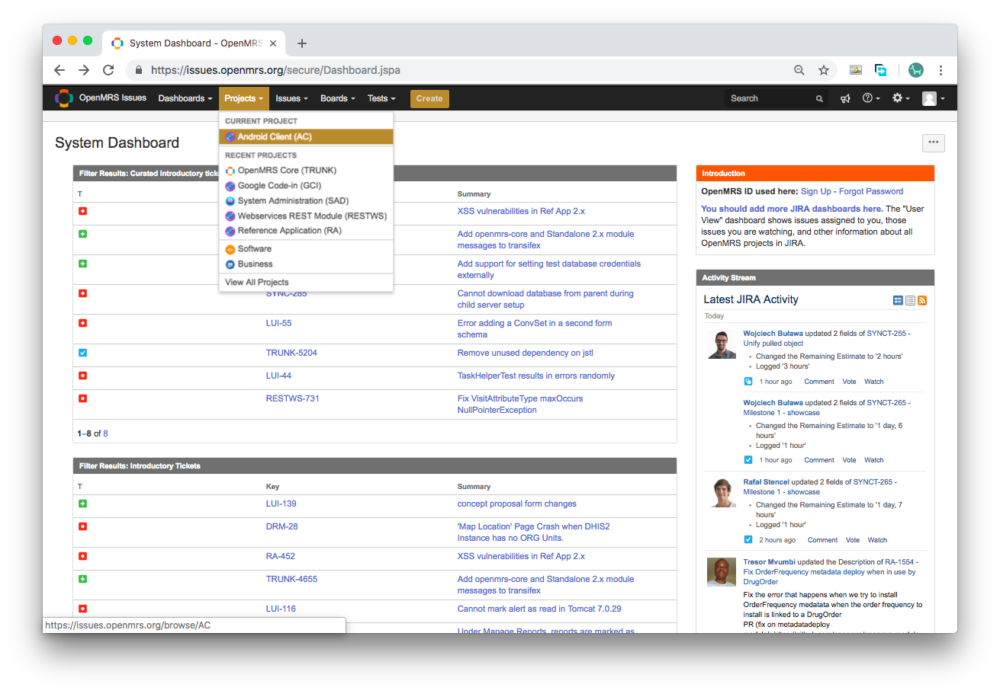

Troubleshooting Android Client
Can't Login?
There are a few things you would need to first take note in logging in. Make sure that you enter a valid server for the URL address. In setting up a customized server, you may request one from helpdesk or server maintainers. Due to a limitation of resources, do note however that these customized test servers are only meant to be used for a limited time only. For more information regarding different testing servers, please visit the following link.
You may also refer to this guide which discusses how to test on the default test server.
Aside from this, do note that the username and password does not correspond to your OpenMRS ID. Using the default test server, you would opt to use:
username: admin password: Admin123
Have an Issue?
This guide covers the basic setup and instructions to take note of while using the Android client. Make sure to refer to the guide first. The guide walks through the basics of entering patient details, uploading patient photos, etc. which you may check out in this page.
However, if there are other issues you come across, you could take the following steps:
1. Visit OpenMRS Talk
You could check out current issues by searching "android client" as seen in the picture below. 
If not, you could file an issue as seen below.

2. File in JIRA
As an OpenMRS developer, you could opt to file an issue in the JIRA as seen below. If you are new to the OpenMRS environment, you would need to go to helpdesk and ask for JIRA access first. 